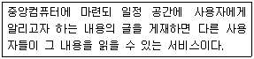
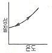
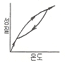
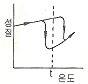
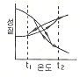

침투비파괴검사기능사 (2009-01-18 기출문제)
1과목: 침투탐상시험법(대략구분)
1. 다음 중 침투탐상검사의 시험편에 대하여 유해한 영향을 미치는 표면상태로 볼 수 없는 것은?
- 젖은 표면
- 거친 용접면
- 다듬질한 표면
- 기름기있는 표면
(정답률: 90%)

2. 후유화성 침투탐상시험에서 유화처리의 주된 목적은?
- 침투액의 형광성을 증대시키기 위해
- 침투액의 수세를 가능하도록 하기 위해
- 침투액의 세척성 확인을 쉽게 하기 위해
- 침투액의 용제제거가 가능하도록 하기 위해
(정답률: 57%)
3. 침투탐상시험에 사용되는 침투액의 특성에 해당되지 않는 것은?
- 매우 빨리 증발하여야 한다.
- 색채 콘트라스트가 높아야 한다.
- 인화점이 높고 온도 안정성이 있어야 한다.
- 미세한 개구부에도 쉽게 침투할 수 있어야 한다.
(정답률: 91%)
4. 다음 중 침투액의 침투시간이 적절하게 선정되도록 하기 위해 고려해야 할 사항과 거리가 먼 것은?
- 시험체의 재질
- 현상제의 현상시간
- 시험체와 침투액의 온도
- 예상되는 결함의 종류와 크기
(정답률: 52%)
5. 섭씨 25℃는 화씨(℉) 온도로 몇 도 인가?
- 13℉
- 46℉
- 77℉
- 248℉
(정답률: 82%)
6. 다음 중 침투탐상시험에서 일반적인 시험편의 표면을 전처리하는 방법으로 가장 좋은 것은?
- 연마(Grinding)
- 쇠솔질(Wire Brushing)
- 증기세척(Vapor Degreasing)
- 샌드 블라스팅(Sand Blasting)
(정답률: 64%)
7. 다음 중 침투탐상시험에서 의사지시모양을 발생시키는 원이 아닌 것은?
- 제거처리가 부적당한 경우
- 불연속의 균열성지시가 나타난 경우
- 시험체의 형상이 복잡한 홈이 있는 경우
- 검사대의 잔여 침투액이 시험체 표면에 묻은 경우
(정답률: 47%)
8. 다음 중 형광침투액의 성분이 아닌 것은?
- 프탈산 에스테르
- 유면 계면활성제
- 적색 아조계 염료
- 연질 석유계 탄화수소
(정답률: 55%)
9. 침투탐상시험 결과의 해석 및 판정을 하기 위한 조치의 설명으로 틀린 것은?
- 불연속의 크기를 측정한다.
- 어떤 종류의 불연속의 의한 형성인지 해석한다.
- 불연속이 사용시 어떤 영향을 줄 것인지 판단한다.
- 불연속으로 판단되면 합격불합격의 기준에 관계없이 폐기한다.
(정답률: 88%)
10. 다음 중 자외선조사장치에 사용되는 자외선의 파장 범위에 해당되는 것은?
- 200nm
- 350nm
- 480nm
- 560nm
(정답률: 64%)
11. 수세성 형광침투액과 습식현상제를 사용하여 침투탐상 시험을 할 때 탐상절차에 따른 장치의 배열순서로 옳은 것은?
- 전처리대→세척조→침투조→현상조→건조대→검사대
- 전처리대→침투조→세척조→건조대→현상조→검사대
- 전처리대→침투조→세척조→현상조→건조대→검사대
- 전처리대→침투조→현상조→세척조→건조대→검사대
(정답률: 50%)
12. 금속재료의 결햠탐상에 일반적으로 사용되는 초음파 탐상시험의 주파수 범위에 해당되는 것은?
- 0.5kHz
- 1kHz
- 20kHz
- 2MHz
(정답률: 42%)
13. 자분탐상시험에서 프로드법에 의한 자화 방법의 설명으로 틀린 것은?
- 아주 작은 시험체의 검사에 적용이 용이하다.
- 현상이 복잡한 시험체에도 정밀하게 검사 할수 있다.
- 대상 시험체에 2개의 전극을 대고 전류를 흐르게 한다.
- 시험체에 큰 전류를 사용하므로 프로드 자국이 남기 쉽다.
(정답률: 25%)
14. 침투탐상시험으로 가늘고 촘촘한 표면의 갈라진 틈을 탐상하려 할 때 고려할 사항과 거리가 먼 것은?
- 건조시간을 가능 한 짧게 한다.
- 유화제 사용시에는 보통 때보다 유화시간을 늘린다.
- 전처리를 철저히 하고 배경과의 대조가 잘 이루어지게 한다.
- 시험편의 탐상부를 세척한 후 침투액을 사용하기 전에 현상제를 먼저 바른다.
(정답률: 60%)
15. 다음 중 누설검사에서 1기압과 값이 다른 것은?
- 760mmHg
- 760Torr
- 980Kg/cm2
- 1013mbar
(정답률: 72%)
16. 침투탐상시험의 현상제에 대한 설명으로 틀린 것은?
- 건식 현상제는 흡수성이 있는 백색분말이다.
- 습식 현상제는 건식 현상제와 물의 혼합물이다.
- 현상제를 두 가지로 분류할 때는 습식 현상제와 건식현상제로 구분한다.
- 현상제는 판독시 시각적인 차이를 증대시키기 위하여 형광물질을 도포한 것도 있다.
(정답률: 58%)
17. 미세하고 깊이가 얕은 표면균열을 자분탐상시험으로 검사할 때 다음 방법 중 가장 효과가 높은 검사법은?
- 교류-건식법
- 건식-직류
- 교류-습식법
- 직류-습식법
(정답률: 61%)
18. 다음 중 비파괴검사의 신뢰도를 향상시킬 수 있는 내용을 설명한 것으로 틀린 것은?
- 비파괴검사를 수행하는 기술자의 기량을 향상시켜 검사의 신뢰도를 높일 수 있다.
- 제품 또는 부품에 적합한 비파괴검사법의 선정을 통해 검사의 신뢰도를 향상시킬 수 있다.
- 제품 또는 부품에 적합한 평가 기준의 선정 및 적용으로 검사의 신뢰도를 향상시킬 수 있다.
- 검출 가능한 모든 지시 및 불연속을 제거하고 폐기함으로서 검사의 신뢰도를 향상시킬 수 있다.
(정답률: 66%)
19. 다음 방사선투과시험에 사용하는 감마선원 중 반감기가 가장 긴 건은?
- Co-60
- Cs-137
- Ir-192
- Tm-170
(정답률: 32%)
20. 다음 중 헬륨질량분석, 압력변화시험 등이 속하는 비파괴 검사법은?
- 육안검사
- 누설검사
- 음향방출시험
- 침투탐상검사
(정답률: 84%)
2과목: 침투탐상관련규격(대략구분)
21. 다음 중 시험체의 도금두께 측정에 가장 적합한 비파괴검사법은?
- 침투탐상시험법
- 음향방출시험법
- 자분탐상시험법
- 와전류탐상시험법
(정답률: 65%)
22. 다음 중 내부 기공의 결함 검출에 가장 적합한 비파괴 검사법은?
- 음향방출시험
- 방사선투과시험
- 침투탐상시험
- 와전류탐상시험
(정답률: 55%)
23. 다음 중 비파괴검사의 안전관리에 대한 설명으로 옳은 것?
- 방사선의 사용은 근로기준법에 규정되고 있고 이에 따르면 누구나 취급해도 좋다.
- 방사선투과시험에 사용되는 방사선이 강하지 않는 경우 안전 측면에 특별히 유의할 필요는 없다.
- 초음파탐상시험에 사용되는 초음파가 강력한 경우 유자격자에 의한 안전관리 지도가 의무화되어 있다.
- 침투탐상시험의 세정처리 등에 사용된 폐액의 경우에는 환경보건에 주의 한다.
(정답률: 52%)
24. 다음 중 전자유도시험의 적용분야로 적합하지 않는 것은?
- 철강 재료의 결함탐상시험
- 비철금속 재료의 재질시험
- 세라믹 내의 미세균열
- 비전도체의 도금막 두께 측정
(정답률: 58%)
25. 약 1mm 정도 두께의 자동차용 다듬질 강판에 존재하는 라미네이션 결함을 검사하고자 할 때 다음 중 가장 적합하게 적용할 수 있는 비파괴검사법은?
- 누설검사
- 침투탐상시험
- 자분탐상시험
- 초음파탐상시험
(정답률: 56%)
26. 침투탐상 시험방법 및 침투지시모양의 분류(KS B 0816)에 규정된 시험기록 사항 중 조작 조건에서 시험시의 온도에 대한 설명으로 옳은 것은?
- 시험 장소에서의 침투액의 온도가 16 ~49℃ 일 때의 온도는 반드시 기록하여야 한다.
- 시험 장소에서 기온이 15℃ 이하 또는 50℃ 이상일 때의 온도는 반드시 기록하여야 한다.
- 시험 장소에서의 기온이 25 ~ 40℃ 일 때의 온도는 반드시 기록하여야 한다.
- 시험 장소에서 기온이 20℃ 이하 또는 45℃ 이상일 때의 온도는 반드시 기록하여야 한다.
(정답률: 64%)
27. 침투탐상 시험방법 및 침투지시모양의 분류(KS B 0816)의 현상방법에 따른 분류와 기호가 서로 틀린 것은?
- 무현상법 : L
- 건식현상법 : D
- 습식현상법(수용성) : A
- 습식현상법(수현탁성) : W
(정답률: 89%)
28. 항공 우주용 기기의 침투탐상 검사방법(KS W 0914)에서 항공용 부품을 비수성 현상제로 침투지시모양을 관찰할 때 현상제의 체류시간(Dwell Time)으로 옳은 것은?
- 최소 7분, 최대 1시간
- 최소 7분, 최대 2시간
- 최소 10분, 최대 1시간
- 최소 10분, 최대 2시간
(정답률: 30%)
29. 항공 우주용 기기의 침투탐상 검사방법(KS W 0914)에서 사용중인 침투액의 수분 함유량 최소 점검주기는 얼마인가?
- 1개월
- 2개월
- 3개월
- 6개월
(정답률: 49%)
30. 침투탐상 시험방법 및 침투지시모양의 분류(KS B 0816)에 의한 연속침투지시모양에 대한 설명으로 가장 옳은 것은?
- 여러 개의 원형상 침투지시모양이 거의 동일 직선상에 3mm 간격으로 나란히 존재할 때
- 상호거리가 2mm 이하인 여러 개의 지시모양이 거의 동일 직선상에 나란히 존재할 때
- 길이가 나비의 3배 이상인 여러 개의 침투지시가 거의 동일 직선상에 나란히 존재할 때
- 일정한 면적 내에 여러 개의 침투지시가 2mm이상 떨어져 각각 분산되어 독립된 상태로 존재할 때
(정답률: 75%)
31. 침투탐상 시험방법 및 침투지시모양의 분류(KS B 0816)에 따라 사용하는 침투액의 분류와 잉여 침투액의 제거 방법에 따른 분류의 명칭 기호 조합이 “FB"일 때 이는 무엇을 의미하는가?
- 수세성 염색침투액
- 수세성 형광침투액
- 용제제거성 염색침투액
- 기름베이스 후유화성 형광침투액
(정답률: 69%)
32. 침투탐상 시험방법 및 침투지시모양의 분류(KS B 0816)에서 다음 중 별도의 건조조작이 필요하지 않는 침투액 은?
- 용제제거성 염색침투액
- 수세성 형광침투액
- 후유화성 형광침투액
- 후유화성 염색침투액
(정답률: 53%)
33. 침투탐상 시험방법 및 침투지시모양의 분류(KS B 0816)에서 형광침투액 사용시 특별한 규정이 없을 경우 검사원이 어둠에 눈을 적용시키기 위하여 필요한 최소 시간은?
- 1초
- 1분
- 30분
- 60분
(정답률: 71%)
34. 침투탐상 시험방법 및 침투지시모양의 분류(KS B 0816)에 따라 다음과 같은 경우 침투지시모양의 지시길이로 옳은 것은? “거의 동일 선상에 지시모양이 각각 2mm, 3mm, 2mm 존재하고, 그 사이의 간격이 각각 1.5mm,1mm 이다. “
- 1개의 연속된 지시모양으로 지시길이는 7mm이다.
- 1개의 연속된 지시모양으로 지시길이는 9.5mm이다.
- 2개의 지시모양으로 지시길이는 2mm, 6mm이다.
- 2개의 지시모양으로 지시길이는 6.5mm, 6mm이다.
(정답률: 66%)
35. 항공 우주용 기기의 침투탐상 검사방법(KS W 0914)에서 규정한 탐상검사에 합격한 각각의 구성 부품에 표시법에 대한 설명으로 틀린 것은?
- 적용하는 시방서에 명백히 허용되어 있는 경우에는 각인을 사용하여야 한다.
- 부품에 각인이 허용되지 않는 경우에는 에칭으로 표시를 하여도 좋다.
- 착색에 의한 전수검사 합격 부품은 청색염료를 사용하여야 사용한다.
- 착색에 의한 샘플링검사에서 합격한 것을 표시하려면 노란색의 염료를 사용하여야 한다.
(정답률: 43%)
36. 항공 우주용 기기의 침투탐상 검사방법(KS W 0914)에 의한 현상제의 종류와 명칭이 틀리게 나열된 것은?
- 종류 a : 건식 분말 현상제
- 종류 b : 수용성 현상제
- 종류 c : 수현탁성 현상제
- 종류 d : 특정 용도의 현상제
(정답률: 38%)
37. 침투탐상 시험방법 및 침투지시모양의 분류(KS B 0816)에 규정한 B형 대비시험편의 재질로 옳은 것은?
- 알루미늄 및 알루미늄 합금판
- 동 및 동 합금판
- 용접구조용 압연 강재
- 고탐소, 크롬 베어링 강재
(정답률: 56%)
38. 침투탐상 시험방법 및 침투지시모양의 분류(KS B 0816)에 의한 시험의 조작 중 세척처리와 제거처리에 대한 설명이 틀린 것은?
- 후유화성 침투액은 세척액으로 세척한다.
- 용제제거성 침투액은 헝겊 또는 총이수건 및 세척액 으로 제거한다.
- 스프레이 노즐을 사용할 때의 수압은 특별한 규정이 없는 한 275kPa 이하로 한다.
- 형광침투액을 사용하는 시험에서는 반드시 자외선을 비추어 처리의 정도를 확인하여야 한다.
(정답률: 60%)
39. 항공 우주용 기기의 침투탐상 검사방법(KS W 0914)에서 일반 요구사항 중 관찰 조건에 대한 설명으로 틀린 것은?
- 정치식 형광침투탐상검사인 경우 주위 배경의 백색광은 20[lx]이하이어야 한다.
- 자외선조사장치는 자외선 필터의 바로 앞면의 방사 조도가 180㎼/cm2 이상이 되어야 한다.
- 염색침투탐상검사인 경우 조명장치는 검사대상 구성부품의 표면에 적어도 1000[lx] 의 백색광을 방사 하는 것이어야 한다.
- 이동식 형광침투탐상장치를 사용하는 경우 검사 중 배경의 백색광을 암막 등으로 최저 가시레벨로 낮춘 상태에서 자외선 강도를 적절히 유지해야 한다.
(정답률: 37%)
40. 침투탐상 시험방법 및 침투지시모양의 분류 (KS B 0816)에서 다음 중 현상 방법에 따른 분류에 속하지 않는 것은?
- 건식현상법
- 수용성 습식현상법
- 속건식현상법
- 기름현탁성 습식현상법
(정답률: 85%)
3과목: 금속재료일반 및 용접일반(대략구분)
41. 컴퓨터의 구성요소 중 중앙처리장치에 해당하는 것은?
- Hard Disk
- CPU
- CD-ROM
- Floppy Disk
(정답률: 75%)
42. 불특정 다수에게 광고를 목적으로 전송 되어지는 메일은?
- 인터넷 메일
- 스팸 메일
- 멀티미디어 메일
- 상거래 메일
(정답률: 75%)
43. 다음이 설명하고 있는 웹 서비스는?

- 전자대화(Chatting)
- 홈뱅킹(Home Banking)
- 전자게시판(Bulletinn Board System)
- 파일전송(File Exchange)
(정답률: 73%)
44. 도메인 네임(Domain Name)에 대한 설명으로 옳지 않은 것은?
- 네트워크의 이름이 될수 있다.
- 도메인 네임은 서로 중복될 수 있다.
- 도메인 서버에서 도메인 네임을 IP주소로 바뀌어 사용된다.
- 컴퓨터이름, 기관이름, 기관성격, 국가 등이 표현된다.
(정답률: 42%)
45. 운영체제(Operating System)의 역할로 옳지 않은 것은?
- 데이터 관리
- 스케줄 관리
- 파일 관리
- 컴파일
(정답률: 34%)
46. 동소변태가 일어날 때의 성질(팽창, 수축)과 온도사이의 변화곡선으로 옳은 것은?




(정답률: 36%)
47. 다음 중 초경합금과 관계없는 것은?
- TiC
- WC
- Widia
- Lautal
(정답률: 53%)
48. 인장시험편의 표점길이가 100mm이고, 인장시험시 파괴되기 직전의 표점거리가 120mm일 때 연신율은 몇 % 인가?
- 10%
- 20%
- 30%
- 40%
(정답률: 83%)
49. 구상흑연주철은 주조성, 가공성 및 내마멸성이 우수하다. 이러한 구상흑연주철 제조시 구상화제로 첨가 되는 원소로 옳은 것은?
- P, S
- Mg, Ca
- Pb, Zn
- O, N
(정답률: 84%)
50. 다음중 가장 높은 온도에서 용융되는 금속은?
- Cu
- Ni
- Cr
- W
(정답률: 64%)
51. 순철의 A3변태점은 약 몇 ℃ 인가?
- 210
- 768
- 910
- 1400
(정답률: 50%)
52. 공구용 합금강 재료로서 구비해야 할 조건으로 틀린것은?
- 강인성이 커야 한다.
- 내마멸성이 작아야 한다.
- 열처리와 공작이 용이해야 한다.
- 고온에서의 경도는 높아야 한다.
(정답률: 60%)
53. 다음 중 Mg 합금에 해당하는 것은?
- 실루민
- 문쯔메탈
- 엘렉트론
- 배빗메탈
(정답률: 21%)
54. 금속의 격자에서 원자의 수가 2개이며, 배위수가 8인 격자는?
- 체심입방격자
- 면심입방격자
- 조밀육방격자
- 조밀정방격자
(정답률: 50%)
55. Ni-Fe계 합금인 Invar는 길이 측정용 표준자, 바이메탈, VTR 헤드의 고정대 등에 사용되는데 이는 재료의 어떤 특성 때문에 사용하는가?
- 자성
- 비중
- 열팽창계수
- 전기저항
(정답률: 56%)
56. 합금강에 함유된 함금원소와 영향이 옳게 짝지어진 것은?
- Ni - 뜨임메짐 방지
- Mo - 적열메짐 방지
- Mn - 전자기적 성질 개선
- W - 고온강도와 경도 증가
(정답률: 32%)
57. 다음 중 톰백(tombac)의 주성분으로 옳은 것은?
- 금 + 철
- 구리 + 아연
- 구리 + 주석
- 알루미늄 + 망간
(정답률: 50%)
58. 정격 2차 전류 200A, 정격 사용률은 50%의 아크용 접기로 120A의 용접 전류를 사용하여 용접하였을 때 허용 사용률은 약 몇 % 인가?
- 100
- 121
- 139
- 142
(정답률: 49%)
59. 가스 절단시 산소의 순도는 절단결과에 많은 영향을 준다. 절단 산소에 불순물이 증가하여 영향을 주는 것에 대한 설명으로 틀린 것은?
- 절단 속도가 늦어진다.
- 절단 홈의 폭이 좁아진다.
- 절단 개시시간이 길어진다.
- 절단면이 거칠어진다.
(정답률: 27%)
60. 강재표면의 흠이나 개재물, 탈탄층 등을 제거하기 위하여 될 수 있는 대로 얇게 그리고 타원형 모양으로 표면을 깎아 내는 가공법은?
- 스카핑
- 용사법
- 원자 수소법
- 레이저 용접
(정답률: 67%)